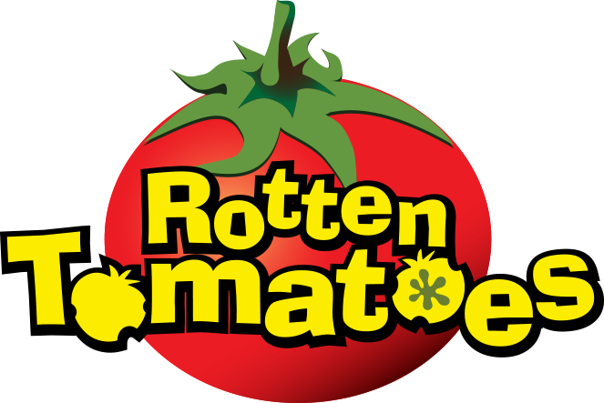

3.4/5
7.6/10
90%
"Spectaculaire dans ses scènes de combat" - Journal du Geek
"L'épisode le plus hallucinant de la saga" - Allociné
"Le meilleur film d'action de l'année" - SensCritique
John Wick est désormais en cavale. Une prime de 14 millions de dollars a été mise sur sa tête car il a tué un membre de la Grande Table. De plus, l'ayant fait dans les murs du Continental Hotel de New York, il se retrouve excommunié. John peut malgré tout compter sur l'aide de Winston, le directeur du Continental, qui lui a laissé une heure avant d’être considéré comme banni. John va alors tout faire pour quitter la ville et échapper aux assassins qui le traquent.
| Lundi | Mardi | Mercredi | Jeudi | Vendredi | Samedi | Dimanche |
|---|---|---|---|---|---|---|
| 21h00 | 21h00 | 14h00 21h00 | 21h00 | 18h00 21h00 | 14h00 21h00 | 13h00 18h00 21h00 |
Chad Stahelski
Keanu Reeves :
John WickIan McShane :
WinstonLaurence Fishburne :
The Bowery KingHalle Berry :
Al-Azwar